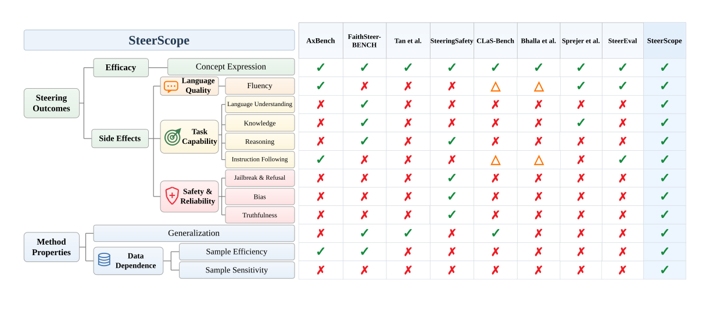
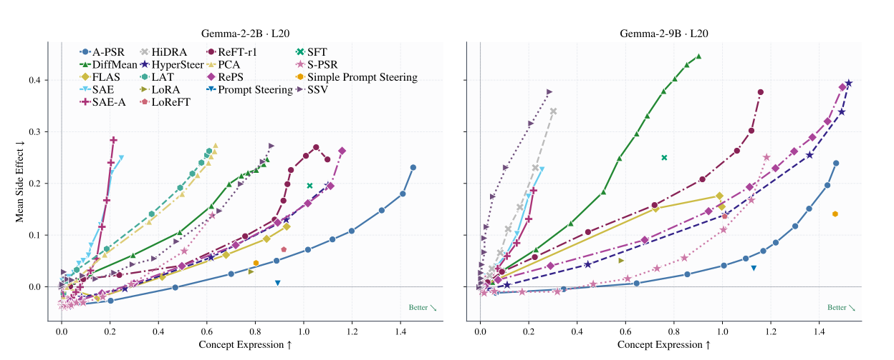
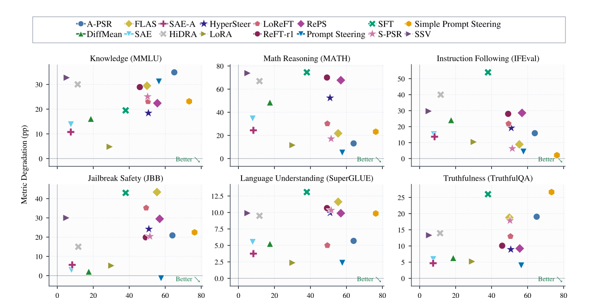
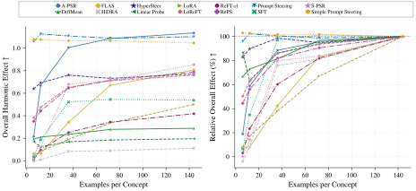

Abstract
SteerScope is a multi-dimensional evaluation suite for LLM steering. It measures target efficacy alongside language quality, task capability, safety, generalization, sample efficiency, and sample sensitivity. By evaluating each method across steering strengths, SteerScope characterizes what steering changes and when those changes hold.
Benchmark Overview
We evaluate steering methods under a shared protocol on Gemma-2-2B-it and Gemma-2-9B-it, covering 500 concepts from the GemmaScope concept vocabulary.

Results
- Across both model scales, no evaluated activation-steering method dominates Prompt Steering on target efficacy versus composite side effects.
- Efficacy and composite side effects generally rise together. Optimization-free methods tend to have less favorable trade-offs than prompting and methods with learned interventions.
- Method rankings vary across individual side-effect metrics. Some low-strength interventions improve off-target metrics, but reversing the steering direction removes or reverses those gains.
- Sample efficiency differs substantially: HyperSteer and DiffMean retain much of their full-data effect with few examples, while A-PSR, FLAS, LoRA, and ReFT-r1 require more data.
- Prompt Steering, Simple Prompt Steering, and SAE have zero sample sensitivity on both model scales; every other evaluated method shows nonzero variation across training subsets.
- Activation-steering methods tend to have lower Cross-Lingual Retention than Prompt Steering. Target efficacy transfers more readily than behavioral quality, with some side effects becoming stronger under OOD prompts.
For complete results, ablations, and analysis, see the paper.

Capability trade-offs

Sample efficiency

Generalization
Interactive generalization results require JavaScript.
Sample sensitivity
Interactive sample-sensitivity results require JavaScript.
Evaluated Methods
| Family | Methods |
|---|---|
| Optimization-free | DiffMean, PCA, LAT, Spherical Steering, HiDRA, AUSteer, SAE, SAE-A |
| Directly optimized | Linear Probe, SSV, ReFT-r1, LoReFT, A-PSR, S-PSR, RePS, ODESteer, StepODESteer |
| Hypernetwork-based | HyperSteer, FLAS |
| Baselines | Prompt Steering, Simple Prompt Steering, LoRA, SFT |
Reproduction
SteerScope requires Linux, NVIDIA GPUs, Python 3.12, and access to the gated Gemma 2 weights. The compact profile runs 20 methods plus the random control on 10 concepts with Gemma-2-2B-it.
git clone https://github.com/yht0511/steerscope.git
cd steerscope
bash scripts/setup.sh
cp .env.example .env
set -a
source .env
set +a
./scripts/run_2b_l20_10concepts.sh